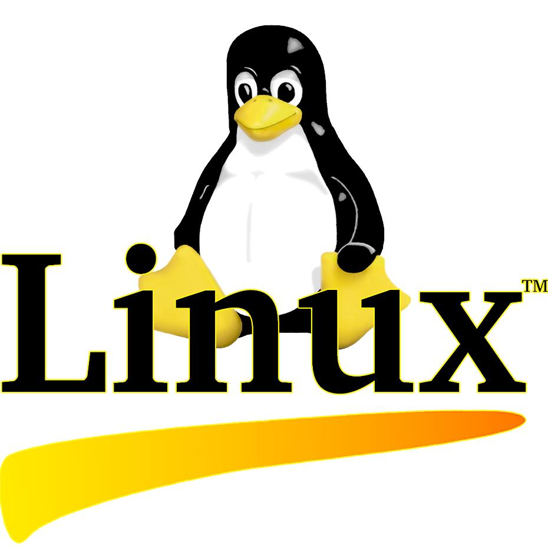

Ročníková práca z informatiky
Táto webová stránka obsahuje informácie o rôznych druhoch softvéru a licenciách. Cieľom práce je vysvetliť základné typy softvéru, ich vlastnosti, výhody a nevýhody.
Kliknutím na jednotlivé témy sa zobrazia podrobnejšie informácie.
| Typ softvéru | Zadarmo | Zdrojový kód | Obmedzenia |
|---|---|---|---|
| Demoverzia | Áno | Nie | Čas alebo funkcie |
| Freeware | Áno | Nie | Bez úprav programu |
| Open Source | Áno | Áno | Takmer žiadne |
| Adware | Áno | Nie | Obsahuje reklamy |
| Shareware | Dočasne | Nie | Časové obmedzenie |
| Public Domain | Áno | Áno | Bez obmedzení |

Autor: Ján Forgáč